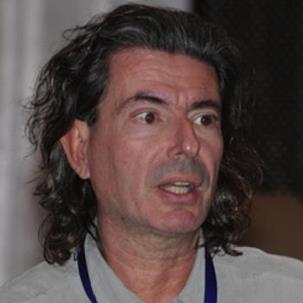
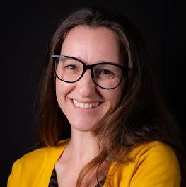

The people behind ECSCW 2027, with the right contact for each kind of question.

George A. PapadopoulosUniversity of Cyprus, Cypruspapadopoulos.george[a]ucy.ac.cy
Heloisa CandelloTechnology and Leadership Institute, Brazil[Program Committee members, to be announced]